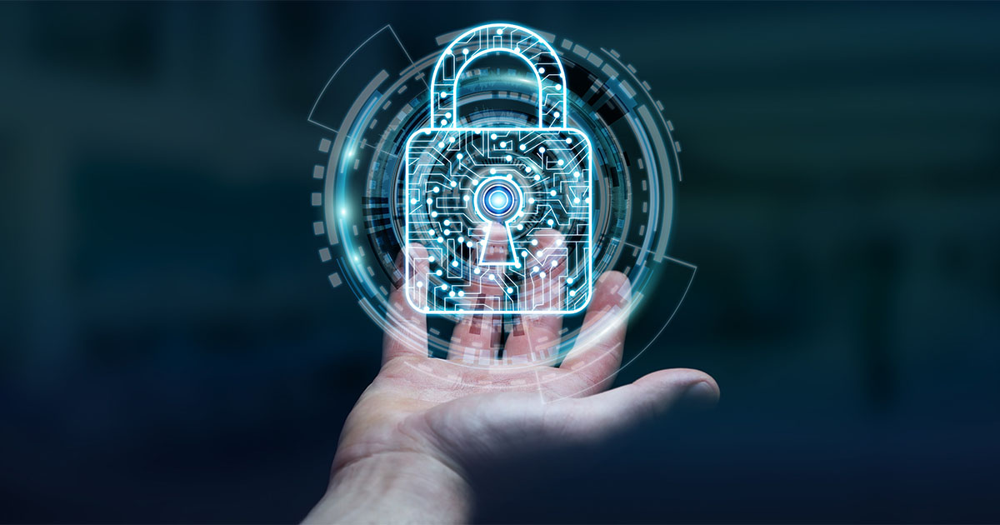

Seguridad en Internet
¿Qué es la seguridad en Internet?
La seguridad en Internet es un término que describe la seguridad para actividades y transacciones realizadas en Internet. Es un componente particular de las principales ideas de ciberseguridad y seguridad informática.
Aspectos de la Seguridad en Internet
- Seguridad de los navegadores
- Conductas en línea
- Seguridad de redes
Amenazas Comunes en Internet
- Hackeo: Acceso no autorizado a sistemas de computadora, cuentas de correo electrónico o sitios web.
- Virus o malware: Software malicioso que puede dañar datos o hacer que los sistemas sean vulnerables a otras amenazas.
- Robo de identidad: Los criminales pueden robar información personal y financiera.
Protección Contra Amenazas
Las personas y organizaciones pueden protegerse de estos tipos de amenaza aplicando prácticas de seguridad en Internet.
Amenazas de Seguridad en Internet
Conoce las amenazas más comunes y cómo protegerte
Phishing
El phishing es un ciberataque que implica correos electrónicos disfrazados. Los hackers intentan engañar a los receptores de correos electrónicos para que crean que un mensaje es genuino y relevante, de forma que hagan clic en un enlace o abran un archivo adjunto. El objetivo es engañar a las personas para que entreguen su información personal o descarguen malware.